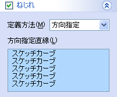

スイープサーフェイス
スイープサーフェイス
プロファイル形状をパス形状に沿ってスイープさせたサーフェイスを作成します。

操作方法
パラメータの入力が整うと作成形状が表示されます。形状の確認後、OKボタンで実行します。
パラメータ
- プロファイル

スケッチ(全体、レイヤー、カーブ）をプロファイルとして選択できます。 - パス

端点でつながった線(列)要素をスイープパスとして選択します。
パスはプロファイル平面と交点をもつ必要があります。 - ねじれ(オプション)
スイープパス上をプロファイルが回転し(ねじれ)ながらスイープすることができます。回転(ねじれ)は以下の方法で定義します。
- 方向指定
パス上のプロファイルの方向を示す直線を設定します。


- 角度指定
パス上の各点でプロファイルの回転角度を設定します。


- 方向指定
- 方向指定(オプション)
デフォルトではプロファイルはパスの法線平面との角度を維持しながらパス上をスイープします。このオプションで方向を指定するとパスを指定方向に投影した平面曲線との角度を維持しながらスイープするようになります。非平坦パスを使用する場合に望ましい形状を得られる場合があります。
デフォルト(方向を指定しない)

方向(X軸)を指定

- オプション

平行にスイープ


フェイスの最小化